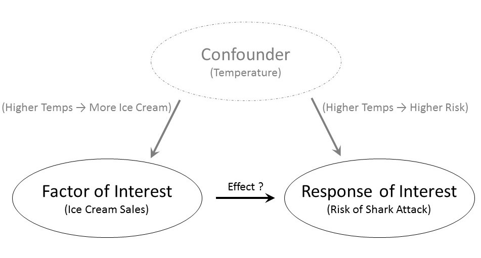

20 Elements of Good Study Design
Thinking about how the data was collected helps us determine how the results generalize beyond the sample itself (to what population the results apply). When our question of interest is about the relationship between two variables (as most questions are), we must also carefully consider the study design. Too often separated from the statistical analysis that follows, keeping the study design in mind should guide the analysis as well as inform us about the conclusions we can draw.
20.1 Two Types of Studies
In order to illustrate how study design can impact the results, consider the following example.
Example 20.1 (Kangaroo Care) At birth, infants have low levels of Vitamin K, a vitamin needed in order to form blood clots. Though rare, without the ability for her blood to clot, an infant could develop a serious bleed. In order to prevent this, the American Academy of Pediatrics recommends that all infants be given a Vitamin K shot shortly after birth in order to raise Vitamin K levels. As with any shot, there is typically discomfort to the infant, which can be very discomforting to new parents.
Kangaroo Care is a method of holding a baby which emphasizes skin-to-skin contact. The child, who is dressed only in a diaper, is placed upright on the parent’s bare chest; a light blanket is draped over the child. Suppose we are interested in determining if utilizing the method while giving the child a Vitamin K shot reduces the discomfort in the infant, as measured by the total amount of time the child cries following the shot.
Within this context, contrast the following two potential study designs:
- We allow the attending nurse to determine whether Kangaroo Care is initiated prior to giving the Vitamin K shot. Following the shot, we record the total time (in seconds) the child cries.
- We flip a coin. If it comes up heads, the nurse should have the parents implement Kangaroo Care prior to giving the Vitamin K shot; if it comes up tails, the nurse should give the Vitamin K shot without implementing Kangaroo Care. Following the shot, we record the total time (in seconds) the child cries.
Note, in both study designs (A) and (B), we only consider term births which have no complications to avoid situations that might alter the timing of the Vitamin K shot or the ability to implement Kangaroo Care.
Note that there are some similarities in the two study designs:
- The underlying population is the same for both designs: infants born at term with no complications.
- There are two groups being compared in both designs: the “Kangaroo Care” group and the “no Kangaroo Care” group.
- The response (variable of interest) is the same in both designs: the time (in seconds) the infant cries.
- There is action taken by the researcher in both designs: a Vitamin K shot is given to the child.
There is one prominent difference between the two study designs:
- For design (A), the choice of Kangaroo Care is left up to the nurse (self-selected); for design (B), the choice of Kangaroo is assigned to the nurse by the researcher, and this selection is made at random.
Design (A) is an example of an observational study; design (B) is a an example of a controlled experiment.
Definition 20.1 (Observational Study) A study in which each subject “self-selects” into one of groups being compared in the study. The phrase “self-selects” is used very loosely here and can include studies for which the groups are defined by an inherent characteristic or are chosen haphazardly.
Definition 20.2 (Controlled Experiment) A study in which each subject is randomly assigned to one of the groups being compared in the study.
It is common to think that anytime the environment is “controlled” by the researcher that a controlled experiment is taking place, but the defining characteristic is the random assignment to groups (sometimes referred to as the factor under study or treatment groups). In the example above, both study designs involved a controlled setting (the delivery room of a hospital) in which trained staff (the nurse) deliver the shot. However, only design (B) is a controlled experiment because the researchers randomly determined which treatment the infant would receive.
To understand the impact of random allocation, suppose that we had conducted a study using design (A); further, the results of the study suggest that those infants who were given a shot while using Kangaroo Care cried for a shorter time period, on average. Can we conclude that it was the Kangaroo Care that led to the shorter crying time? Maybe. Consider the following two potential explanations for the resulting data:
- Kangaroo Care is very effective; as a result, those children who are given Kangaroo Care cry for less time, on average, following the Vitamin K shot.
- It turns out that those nurses who choose to implement Kangaroo Care (remember, they have a choice under design (A) whether they implement the method) are also the nurses with a gentler bedside manner. Therefore, these nurses tend to be very gentle when giving the Vitamin K shot whereas the nurses who choose not to implement Kangaroo Care tend to jab the needle when giving the shot. The reduced crying time is not a result of the Kangaroo Care but the manner in which the shot was given.
The problem is that we are unable to determine which of the explanations is correct under study design (A). Given the data we have collected, we are unable to tease out the effect of the Kangaroo Care from that of the nurse’s bedside manner. As a result, we are able to say we observed an association between the use of Kangaroo Care and reduced crying time, but we are unable to conclude that Kangaroo Care caused a reduction in the crying time (that is, the reduced crying time may be due to something else, like the bedside manner of the nurse). In this hypothetical scenario, the nurse’s bedside manner is called a confounder.
Definition 20.3 (Confounding) When the effect of a variable on the response is mis-represented due to the presence of a third, potentially unobserved, variable known as a confounder.
Note
While both result in estimates we may not trust, confounding is not equivalent to a biased sample.
Confounders can mask the relationship between the factor under study and the response. Did you know there is a documented association between ice cream sales and the risk of shark attacks? As ice cream sales increase, the risk of a shark attack also tends to increase. This does not mean that if a small city in the Midwest increases its ice cream sales that the citizens are at higher risk of being attacked by a shark. As Figure 20.1 illustrates, there is a confounder — temperature. As the temperatures increase, people tend to buy more ice cream; as the temperature increases, people tend to go to the beach, thereby increasing the risk of a shark attack. The two variables, ice cream sales and shark attacks, appear to be related as a result of the confounder of temperature.
Big Idea
Confounders are variables that influence both the factor of interest and the response.
Observational studies are subject to confounding; thus, controlled experiments are often considered the gold standard in research because they allow us to infer cause-and-effect relationships from the data. Controlled experiments allow for causal interpretations because the random allocation to the levels of the factor removes the impact of confounders. Let’s return to the hypothetical Vitamin-K study in Example 20.1. Suppose there are nurses with a gentle bedside manner and those who are a little less gentle. If we randomly determine which infants receive Kangaroo Care, then for every gentle nurse who is told to implement Kangaroo Care while giving the shot, there tends to be a gentle nurse who is told to not implement Kangaroo Care. Similarly, for every less-gentle nurse who is told to implement Kangaroo Care while giving a shot, there tends to be a less-gentle nurse who is told to not implement Kangaroo Care. This is illustrated in Figure 20.2. For an observational study, the treatment groups can be unbalanced; for example, Figure 20.2 illustrates a case in which there is a higher fraction (11/12 compared to 1/4) of friendly nurses in the Kangaroo Care group compared to the No Kangaroo Care group. For the controlled experiment however, the treatment groups tend to be balanced with respect to this confounder; there is approximately the same fraction of friendly nurses in both groups. Random assignment is the great equalizer. It tends to result in groups which are similar in all respects; therefore, since we have eliminated all other differences between the groups (other than the treatment they receive), any differences we observe between the groups must be due to the grouping and not an underlying confounding variable.

Big Idea
Randomly assigning subjects to groups balances the groups with respect to any confounders; that is, the groups being compared are similar. Therefore, any differences between the two groups can be attributed to the grouping itself, leading to cause-and-effect conclusions.
While controlled experiments are a fantastic study design, we should not discount the use of observational studies. Consider the Deepwater Horizon Case Study described in Chapter 4; suppose we are interested in the following question:
Is there evidence that volunteers who are directly exposed to oil have an increased risk of developing adverse respiratory symptoms compared to those who are not directly exposed to oil?
The response is whether a volunteer develops adverse respiratory symptoms; the factor of interest is whether the volunteer has direct exposure to oil. We could conduct a controlled experiment by randomly determining which volunteers are assigned to wildlife clean up and which are assigned to administrative tasks, for example. However, it may be that volunteer tasks need to be determined by skillset or by greatest need at the time the person volunteers. It may not be feasible to randomly assign volunteers to specific positions. Or, it could be that the data was obtained after the fact; that is, the data is not the result of a planned study in which case random assignment is not possible because volunteers self-selected into positions in the past. If random assignment is not possible, it does not mean the data is useless. But, it does mean we will need to be sure we acknowledge, and potentially address, the potential confounding when performing the analysis and discussing the results.
The big idea is that in order to make causal conclusions, we must be able to state that the groups being compared are balanced with respect to any potential confounders; random assignment is one technique for accomplishing this.
20.2 Aspects of a Well-Designed Study
While controlled experiments are a useful tool, there are many aspects to consider when designing a study. Generally speaking, there are three components to a well-designed study: replication, randomization, and reduction of extraneous noise.
Warning
A study is not poor just because it lacks one of these elements. That is, a study can provide meaningful insights even if it did not make use of each of these elements; every study is unique and should be designed to address the research objective. These elements are simply helpful in creating study designs.
Variability is inherit in any process. We know there is variability in the population; not every subject will respond exactly the same to each treatment. Therefore, our questions do not seek to answer statements about individuals but about general trends in the population. In order to establish these general trends, we must allow that subject-to-subject variability be present within the study itself. This is accomplished through replication, obtaining data on multiple subjects from each group. Each subject’s response would be expected to be similar, with variability within the group due to the inherent variability in the data generating process.
Definition 20.4 (Replication) Replication results from taking measurements on different units (or subjects), for which you expect the results to be similar. That is, any variability across the units is due to natural variability within the population.
Warning
The term “replication” is also used in the context of discussing whether the results of a study are replicable. While our use of the term is about replicating a measurement process within a study, this does not downplay the importance of replicating an entire study.
When we talk about gathering “more data,” we typically mean obtaining a larger number of replicates. Ideally, replicates will be obtained through random selection from the underlying population to ensure they are representative. The subjects are then randomly allocated to a particular level of the factor under study (randomly allocated to a group) when performing a controlled experiment. This random allocation breaks the link between the factor and any potential confounders, allowing for causal interpretations. However, random allocation preserves any link between the factor and the response, if a link exists. These are the two aspects of randomization.
Definition 20.5 (Randomization) Randomization can refer to random selection or random allocation. Random selection refers to the use of a random mechanism (e.g., a simple random sample, Definition 6.2, or a stratified random sample, Definition 6.3) to select units from the population. Random selection minimizes bias.
Random allocation refers to the use of a random mechanism when assigning units to a specific treatment group in a controlled experiment (Definition 20.2). Random allocation eliminates confounding and permits causal interpretations.
Note
While those new to study design can typically describe random selection and random allocation, they often confuse their purpose. Random selection is to ensure the sample is representative. Random allocation balances the groups with respect to confounders.
It is tempting to manually adjust the treatment groups to achieve what the researcher views as balance between the groups. This temptation should be avoided as balancing one feature of the subjects may lead to an imbalance in other features. Remember, random allocation leads to balance. Of course, random allocation does not guarantee any particular sample is perfectly balanced; however, any differences are due to chance alone. As the sample size increases, these differences due to chance are minimized.
Even with random allocation providing balance between the groups, there will still be variability within each group. The more variability present, the more difficult it is to detect a signal — to discern a difference in the mean response across groups. The study will more easily detect the signal if the groups are similar. This leads to the third component of a well-designed study — the reduction of noise.
Definition 20.6 (Reduction of Noise) Reducing extraneous sources of variability can be accomplished by fixing extraneous variables or blocking (Definition 20.7). These actions reduce the number of differences between the units under study.
Tension between Lab Settings and Reality
Scientists and engineers are trained to control unwanted sources of variability (or sources of error in the data generating process). This creates a tension between what is observed in the study (under “lab” settings) and what is observed in practice (in “real-world” settings). This tension always exists, and the proper balance depends on the goals of the researchers.
Fixing the value of extraneous variables can reduce variability in a study. For example, in Example 20.1, we might choose to conduct the study at a single hospital. This choice impacts the value of an extraneous variable. It is likely each hospital has its own training process and protocols. The choice to only conduct the study at a single hospital reduces the “noise” in how infants respond due to different nurse behavior that reflects hospital training/protocol. However, note that this decision also potentially limits the scope of the study. It may not longer be appropriate to apply these results to all hospitals.
An additional tool for reducing noise is blocking, in which observations which are dependent on one another because of a shared characteristic are grouped together.
Definition 20.7 (Blocking) Blocking is a way of minimizing the variability contributed by an inherent characteristic that results in dependent observations. In some cases, the blocks are the unit of observation which is sampled from a larger population, and multiple observations are taken on each unit. In other cases, the blocks are formed by grouping the units of observations according to an inherent characteristic; in these cases that shared characteristic can be thought of having a value that was sampled from a larger population.
In both cases, the observed blocks can be thought of as a random sample; within each block, we have multiple observations, and the observations from the same block are more similar than observations from different blocks.
Example 20.2 (Overseeding Golf Greens) Golf is a major pastime, especially in southern states. Each winter, the putting greens need to be overseeded with grasses that will thrive in cooler weather. This overseeding can affect how the ball rolls along the green. Dudeck and Peeacock (1981) reports on an experiment that involved comparing the ball roll for greens seeded with one of five varieties of rye grass. Ball roll was measured by the mean distance (in meters) that five balls traveled on the green. In order to induce a constant initial velocity, each ball was rolled down an inclined plane.
Because the distance a ball rolls is influenced by the slope of the green, 20 greens were placed into four groups in such a way that the five greens in the same group had a similar slope. Then, within each of these four groups, each of the five greens was randomly assigned to be overseeded with one of the five types of Rye grass. The average ball roll was recorded for each of the 20 greens.
The data from Example 20.2 are shown in Table 20.1.
| Rye Grass Variety | Slope of Green Grouping | Mean Distance Traveled (m) |
|---|---|---|
| A | 1 | 2.764 |
| B | 1 | 2.568 |
| C | 1 | 2.506 |
| D | 1 | 2.612 |
| E | 1 | 2.238 |
| A | 2 | 3.043 |
| B | 2 | 2.977 |
| C | 2 | 2.533 |
| D | 2 | 2.675 |
| E | 2 | 2.616 |
| A | 3 | 2.600 |
| B | 3 | 2.183 |
| C | 3 | 2.334 |
| D | 3 | 2.164 |
| E | 3 | 2.127 |
| A | 4 | 3.049 |
| B | 4 | 3.028 |
| C | 4 | 2.895 |
| D | 4 | 2.724 |
| E | 4 | 2.697 |
It would have been easy to simply assign 4 greens to each of the Rye grass varieties; the random allocation would have balanced any confounders across the five varieties. However, an additional layer was added to the design in order to control some of that additional variability. In particular, greens with similar slopes were grouped together; then, the random allocation to Rye grass varieties happened within the grouped greens. The blocks in this study are the “slope groups.” Each block represents greens with a different slope. Certainly, there are more than 4 potential slopes that a green might have; yet, we observed 4 such groups in our study. We can think of these 4 observed slopes as a sample of all slopes that might exist on a putting green.
Within each block, we have five units of observations; these five units were randomized to the five treatment groups (the five Rye grass varieties). Notice the random allocation strategy ensures that each variety appears exactly once within each slope grouping. This study design will allow us to compare the impact of the Rye grass variety while minimizing the extraneous variability due to the slope of the green, which is a nuisance characteristic. To see how we capitalize on blocking in the analysis, we refer you to Unit IV of the text.
Note
Blocking is often a way of gaining additional power when limited resources require your study to have a small sample size.
An extreme case of blocking occurs when you repeatedly measure the response on the same subject under different treatment conditions. For example, a pre-test/post-test study is an example of a study which incorporates blocking. In this case, the blocks are the individual subjects, the unit of observation. The response is then observed on the subject both prior to the intervention (the “test”) and following the intervention. The rationale here is to use every subject as his or her own “control.” This reduces extraneous noise because the two treatment groups (the pre-test group and the post-test group) are identical.
Big Idea
A block is a secondary grouping variable present during the data collection that records a nuisance characteristic. While it reduces extraneous noise in the sample, the block must be accounted for appropriately during the analysis of the data (as described in Chapter 22).
20.3 Collecting Observational Data
An inability to conduct a controlled experiment does not mean we neglect study design. Random sampling is still helpful in ensuring that the data is representative of the population. And, even if random sampling is not feasible, we should still aim to minimize bias and have a sample that is representative of our population. Similarly, ensuring there are a sufficient number of replications to capture the variability within the data is an important aspect of conducting an observational study. When collecting observational data, one of the most important steps is constructing a list of potential confounders and then collecting data on these variables as well. This will allow us to account for these confounders in our analysis (see Chapter 24); we cannot model what we do not collect. Finally, observational studies may still permit the blocking of subjects and accounting for this additional variability in our analysis.